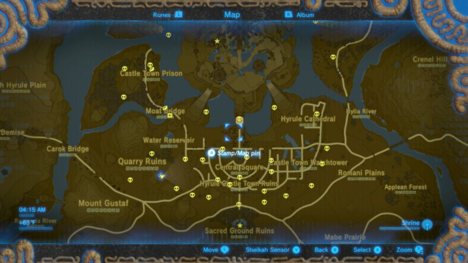
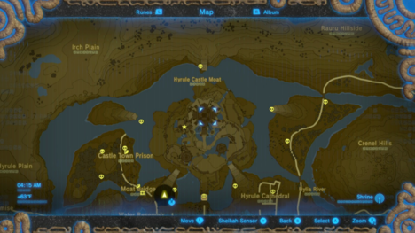
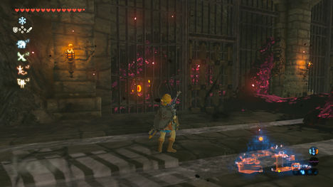
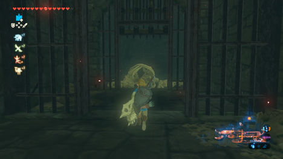
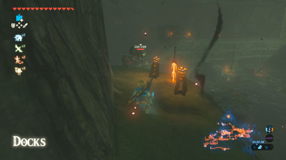
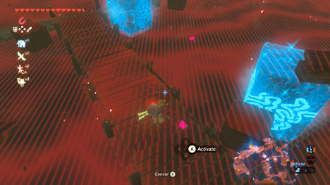
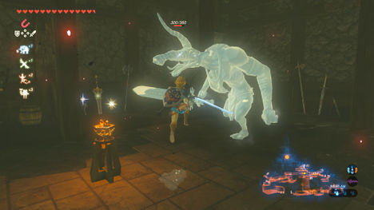

狂野的呼吸是一个非常开放的游戏，系列的第一个。 因此，下面的指南只是您可以体验游戏的许多可能方式之一。 我们建议您花时间探索世界各地的主要目标。
从你与孤岛高原的Rhoam国王谈话那一刻起，学习Hyrule的历史和你觉醒的原因 - 你将能够前往Hyrule城堡，并且在Ganon自己身上。 然而，还有更多的只是行进 - Hyrule城堡是一个危险的地方，根据你以前做的事情，事情可能会有很大的不同。
注意：进入Hyrule城堡的圣殿并面对Ganon将根据您在主要任务中取得的进步有多少，以及您是否已经释放了所有的神兽。 有关可以更改的更多信息，请参阅本节末尾的Boss Fight。
Getting to Hyrule Castle
即使是破坏城堡主墙的行为也是一项艰巨的任务，无论你玩了4或40个小时的游戏。 我们建议您只有在准备充分的时候才尝试进入这个地下城，准备好多余的心和耐力，装备你能找到的最好的和最强大的武器（像大师剑），并释放了四个神野兽。 您还应该拥有尽可能多的心脏容器和耐力容器，您可以找到，并扩大您的库存槽与Korok种子尽可能多的东西，你可以。 在最后的战斗之前用完武器或弹药将会更快地结束运行。 当然 - 如果你不想，你不必做任何事情，事情会变得更加困难。
尽管您可以根据自己的喜好改变这些策略，但是有四条主要路径进入Hyrule城堡本身 - 一方面。 在下一节中，我们将介绍到城堡的不同路线。
- The South Approach - 南
- The West Approach - 西
- The East Approach - 东
- The North Approach - 北
THE SOUTH APPROACH

可以说是最危险的一条，通往Hyrule城堡主要大门的直达路线是与守护者队伍，既有静止的，活跃的和飞行的。 有几个巨型岩石高原与城堡城遗址周围的城墙混合，使得地面或不动的守护者无法得到你的良好的分期点，你可以尝试滑过他们， 在弓射的同时避开超出范围的交易。
城堡镇遗址分为三个部分，分别是东，西，中部遗址。在西方，您可以使用Qu伐遗址的瓦砾躲过巡逻守护者，并由水库移动 - 但这里遗留的遗迹很少。东部的废墟充斥着建筑物和街道的导航，但是有很多守护者在这里巡逻。导致大喷泉的中央废墟是最糟糕的，许多监护人等待激活 - 但是有些已经失踪了几个武器，你可以把剩下的那个砍下来固定它们。在所有方面，您可以使用与废墟相邻的城墙快速绕过，因为只有在被破坏的建筑物之间穿过时，才会在公开场合。
请注意，在中部地区还有更多的Malice，但是几个路障都有一个眼睛，你可以拍摄去除一些Malice。从中央的废墟，你可以直接到主门，或者甚至在门口下滑，或者使用Cryonis区块穿越护城河。
THE WEST APPROACH
从Hyrule Ridge和下面的森林的路径提供了一个更好的几率，你进入最小的战斗 - 但不要指望它是广泛的开放。 这条道路将引导您通过城堡镇监狱 - 或者还有什么 - 其中包括一个俯瞰护城河旁边的废墟的大型岩石高原，在那里你必须与两架高空盘旋的飞行守卫对抗，另外还有一名移动监护人移动 废墟。 在护城河的北端，您可以找到最好的机会 - 木筏只是等待您将Korok Leaf摆放到风帆中 - 尽管您也可以使用Cryonis在护城河之间建立自己的步骤。 您可以将筏子穿过护城河，进入通向城堡的暴露的Minecart铁路的一部分，或者进一步向南，直到您发现进入所述地雷和城堡监狱的着陆点。
THE EAST APPROACH

从大Hyrule森林和东部地区的路径相当空虚，这是一件好事坏事。 好的是，你只能有两个监护人担心从这个方向进来 - 坏消息是，Hyrule城堡公园的盖子很少，只有一座充满树木的小山。 但是，如果你可以在周围玩耍，或者去护城河，那么你只能有一个飞行守护者高跷。
从这里你可以看到整个护城河，但地面是相当高的，这限制了你的两个选择 - 使用Cryonis创建平台，爬上或使用瀑布来建立冰平台，或者你可以移动一点南 在靠近城堡的桥附近的地面，并滑过。 还有一个靠近Boneyard大桥的木筏，但是一路走到城堡可能会很痛苦。
THE NORTH APPROACH
可以说是最简单的方法之一 - 只要你有工具和手段。 您可以从林地大厦向西方方向前进，避免安装的博科比林和狼群的流浪乐队进入最大的最北端。 一名飞行监护人巡逻支柱 - 只要你给他一个宽阔的泊位，他是一个小问题。 从支柱 - 由于你不能攀爬，你可以轻松地到达Hyrule城堡的低平台 - 特别是右边的矿井的入口，以及在矿井附近的一个洞穴中隐藏的海港入口 - 只需要注意两边的两个卫报炮塔。
Assaulting Hyrule Castle 袭击Hyrule城堡
Hyrule城堡本身就是一个巨大的地下城，实际上很多地方是完全可选的 - 你只是主要的目标是攀登到城堡的顶部，进入Ganon所在地图上标记的主要圣殿。 你如何到达那里 - 完全取决于你，并且有很多方法可以做到这一点。
方法往往可以归结为三种类型，或者混合使用：在前进大门的途中，前进门，并攻击加农的奴隶，当您进入王位的主要道路，或者渗透到城堡的内部，并通过 扭曲通道到顶部，或通过周围的墙壁和瀑布隐藏地爬上城堡，尽可能避免任何和所有的战斗。
下面列出，我们将带您完成这些尝试的每一种 - 并提醒您在途中可以找到的许多珍宝和敌人。
- Storming the Front Gates
- Infiltrating the Castle Interior
- Scaling the Castle
Infiltrating the Castle Interior
如果在Hyrule城堡的道路上跑步和射击不是你的事情，那么有很多内部区域没有监护人的存在，而且还有很多宝藏要被发现 - 但是他们并没有生命，而且许多强大的怪物漫游着内部。
有几种方法进入，取决于你的渗透方向。 最简单的是北港码头或东区通往图书馆，西部矿区和监狱锁定，导致塞尔达的房间，详情如下：
THE WEST PASSAGE MINES
您可以通过在Hyrule Castle Moat的西南侧寻找一个靠近水位的小型入口，在晚上，几个发光木材外面出现，可以到达矿山。
里面你会发现一个小厨房，一个烹饪锅，胸部拿着一个钻石，一个可以轰炸的墙壁，通向几个冰霜鹅卵石守卫一个废弃的矿车。
用锤子粉碎鹅卵石并进入矿车。用时间静止并通过一个充满了Keese的隧道，沿着铁轨向下滑动一下，让它移动。
随着矿车车结束，离开并进入一个充满生锈的守护者的大洞穴（以及一组想要你将鸡蛋放在锅里的雕像，如果你想要一个Korok种子）。 向上移动，进入隔壁房间，找到通向大厅的另一个可弹性的墙壁，在那里你会发现右边的一个大型矿井，左边是一个外锁。
LOCKUP
要进入锁定，您可以在上述大厅的尽头找到一个可弹性的墙壁 - 或者您可以通过滑过北部护城河而渗透内部锁定，并通过朽烂的监护人守卫着地面 （更多的发光石标志着路）。
从入口处，内部的门是密封的 - 但是您可以在水面上使用Cryonis来抬起门。 里面你会发现一个非常长的充满恶意和怪物的牢房，所以要警惕。
对于第一个Malice路障，请查看左侧的单元格，找到一个大眼睛，并在您可以拍摄的酒吧间隙。这将解锁双方的细胞，并清除恶意 - 并且有一个皇家卫队的Claymore在眼睛的细胞
对面的牢房有一个可以轰炸的墙壁到Moblin正在等待的相邻牢房。或者，您可以击中门之间的杠杆打开两个 - 但是Lizalfos正在等待在另一个单元格。要小心，因为这里的怪物拥有强大的武器，你应该保持警惕。请注意，Lizalfos的细胞在相邻细胞中有一个可破坏的壁，另一个Lizalfos用银币保持胸部。
一定要在这里检查一个皇家弓对面的细胞，然后向前移动。下一组单元格是您可以通过大厅外部进入的地方，如果您来自矿山，您可以在中间拍摄杠杆以打开细胞 - 但是Moblin等待着另一个监视Blizzard Rod的细胞。
锁定厅的尽头有一个带有黄玉的胸部，但一定要看到通向一个大房间的远壁龛。 在这里，您会发现一个可选的miniboss - Stalnox。
Stalnox是相当强大的，并且会剥夺自己的骨头扔给你 - 但眼睛是弱点。 打击它来扼杀它，如果你造成足够的伤害，你就会脱掉它，你应该用你的力量攻击眼睛，因为它拥有他的真实生活。

继续敲他的眼睛，躲避他的骨头攻击打败他，你会得到传奇的Hylian盾奖！
SHAFT TO UPPER LEVELS
回到城堡的锁定一侧，进入Moblin守卫的大轴。
要起床，您可以使用瀑布（使用Cyronis或爬上附近的石柱开始向上）。 一边，有一个岩石，你可以找到一个Korok，在对面的壁架，你可以发现一个梯子通往一个小房间。 里面有一个杠杆，你可以打到召唤外面的一阵阵，将带你 - 但一定要在这里找到一个可炸的墙壁，通往一个小房间里，Lizalfos守卫一个胸部持有Dinraal的方块碎片。
GUARDS' CHAMBER
在轴的顶部，通过大量通过大量的恶意和眼睛阻挡你的方式。 在右边，如果您清除眼睛堵住路径，并向右看望眼睛与古代箭头胸部的胸部，以及旁边的Royal Broadsword，您可以在较高的外部道路上找到楼梯。 如果你没有去过，这里的楼梯也会导致你接近塞尔达的学习。
继续走主厅，清除恶意的前方，你会到达一个Lizalfos守卫一个烹饪锅和楼梯下到卫兵的房间。 一定要看到这些第一个楼梯的底部是一个易碎的墙壁，左边是通向古老箭头的胸部。

在这个大型的开放式房间里，一些Lizalfos在一些爆炸桶的一楼下，Moblin在下面的平台上等待。 通过射击桶给Lizalfos一个惊喜，然后清理它们。 在这个级别上有很多的战利品，包括骑士的Claymore和Knight的Halberd在目标练习区后面，在那个鸭子的右边，你下来找到一个胸部拿着Naydra的方块碎片。
你也可以爬上楼梯，到达上方，找到一个猎鹰弓，两个拿着银币和炸弹箭的箱子。 现在跳到较低的水平拿出Moblin，并帮助自己，剩下的物品，如皇家克莱莫尔（Royal Claymore）和皇家卫队（Royal Guard）的Claymore。
PRINCESS ZELDA’S ROOM AND STUDY
回到轴的顶部，头部离开，发现自己在塞尔达公主的研究之下，位于尖顶的顶端。
它只是在附近的楼梯上快速攀爬或跳起来，但是在楼梯上观看守卫炮塔，并在尖塔上方守卫天空之翼。
走上楼梯就会让你进入塞尔达的房间，一个Moblin守卫挥舞着双重的边缘。 当你在这里时，在壁炉旁边寻找一个皇家卫队的弓，一个屏幕后面有一个银币，一个是塞尔达公主的日记。

在房间对面，她的学习位于尖塔，之前是一个记忆。 里面你可以找到一个沉默的公主和塞尔达的研究报告。
下一节探讨通过东通道或码头通往利比亚的城堡的另一个入口。
EAST PASSAGE
如果您计划将路线带到沿着西勒护城河（Hyrule Castle Town Park）的西护城河 - 您可以通过大柱子查看护城河，以窥视西北侧的瀑布和大块土地。
使用Cyronis来穿过，或者爬上或使用Zora Armor骑上瀑布，然后沿着城堡斜坡的西北方向行驶，找到一个带有发光宝石的入口。
里面是另一个矿区，配有一个minecart，您可以用它与Stasis一起使用它来引导它沿着轨道飞行，并取出在矿山上飞行的Keese。 在赛道的尽头，你可以找到一个大轴领先 - 但是方式被一个在其背面拥有稀有矿石的石头滑块阻挡。 绕过它来狙击矿石 - 或者当它跌倒时爬上去。

一旦它被击败，它会发现一个大的喷泉阵阵，将让你通过Malice覆盖的入口一路飞到图书馆。
DOCKS
除了东通道入口外，还有另一个秘密入口位于距离锁定区不远的地方 - 就在前门左侧，有一个大洞穴，水会导致 - 这将使您进入一个秘密的港口。 当您可以在这里游泳或驾驶木筏时，可能会更好地粘在左侧壁架上。
这样做会让你俯瞰下面的水，在那里你可以找到一个Lizalfos躺在等待两个在码头 - 但如果你偷偷摸摸，你可以得到他们的下降，并抓住一个伟大的Flamberge旁边的更高的Lizalfos ，并针对以下Lizalfos旁边的爆炸桶。
如果你把它们拿出来，帮助自己去一个浮动的胸部抓住一个古老的箭头，以及另外一个金属的胸部在水中，拿着一个星星片段。
抬起大楼梯到俯瞰港口的平台，并注意所有点燃的火炬，排除一个大的不亮的火盆。 点亮它，你会发现一个秘密的神社：萨斯·科沙神社。 现在，您可以将长途飞行的楼梯上升到图书馆的较高楼层。
LIBRARY
从隐藏的金属书架进入图书馆，你可以把Magnesis放在一边，要保持警惕，因为这个地方正在爬上高级别的Lizalfos，就像在你面前的那个人一样。
其他人等待上述阳台 - 守卫其他出口。 在出头之前，您可以环顾四周的食谱书，还可以在另一个金属书柜上找到您进来的对面。
这导致了一个秘密的房间，其中一个柱子已经爆裂了，你可以用一个石头捣碎者在这里挖一些矿石，并用银币拿起胸部。
还有一个更秘密的书架，你可以移动到你进入的权利，找到国王的私人房间。 里面是国王的日记，一个带有金币的胸甲，还有一个皇家卫队的盾牌。
国王学习之上的楼梯导致了一个充满恶意的门口，您可以狙击以退出到更高的路径上方，或者您可以冒险到图书馆的对面找到一条通往Malice周围的路径 - 一个胸部 一个银币在门外 - 一个房间里有一个伟大的Frostblade在一些瓦砾在拐角处。
ARMORY

图书馆外的大厅里有几个Lizalfos巡逻准备射击你的元素箭，过去他们是一个大型军械库由一个单一的Moblin守卫着。 把他带出去，把你的心脏的内容掠过，这样的物品就像皇家卫队的盾牌，皇家弓箭，皇家克莱莫尔骑士和骑士的戟。 穿过楼梯，跳过破碎的部分进入上面的走廊 - 左边的可弹性墙壁通向一个拥有增强的Rusty Claymore的雕像。
如果你在走廊向左转，你可以找到两个更易破碎的墙壁 - 一个隐藏着一个Lizalfos，另一个是皇家卫队的剑和一些生锈的武器
DINING HALL
在走廊尽头的餐厅是非常有魅力的，因为两组两只手枪都等着你挥舞着一些可怕的武器。 尝试不要一下子诱惑他们，并在进入杀戮之前用箭头将其从范围中削弱。 房间的一边可以找到一个皇家卫队的Halberd被困在一个壁炉上，另一边则是在枝形吊灯上隐藏着皇家弓，而各种各样的食物都散布在这个地方，一个烹饪锅就在 角。

在外面的大厅里，走下楼梯去观察室，一个Moblin在Malice池里守卫着。 杀死他，摧毁眼睛，所以你可以直接到最后一个Moblin的眼睛，并阻止它。 在顶部，你会发现一个雷霆，另外一个皇家弓和胸部持有3个古老的箭头。 然而，你不能从观察室进入卫报室，因为Malice的墙壁阻挡着你的方式，眼睛在另一边。 从内部大厅到达那里，您需要采取另一条路线。
GETTING UP TO THE SANCTUM
从这里，到圣殿的方式很大程度上取决于你 - 但最好的方法可能是回到图书馆出口，让你回到主要道路。 经过监护人在山体滑坡上过去一个守卫天空船在上面巡逻的水池。 在他的回合之后，开始攀爬三棵烧焦的树木中最高的树木，从树梢跳到悬崖上，然后爬上去。 这将使你在一个守护炮塔旁边，让你在它周围跑步，在一个大柱子的后面，你可以爬上圣殿。
您还可以爬上图书馆入口右侧隧道上方的倾斜岩石。 这个倾斜的山有点容易爬，没有任何监护人 - 把你放在圣殿的另一端。
请注意，如果您继续爬过圣殿，您可以在上方找到一个拥有更多古代箭头的胸部，当您最终下降到圣殿面临灾难加农时，这仍然有用。
Storming the Front Gates
如果您希望攻击Hyrule城堡，请警告：Sanctum的主要道路都覆盖着守护者，两个炮塔和飞行的炮塔。 你可能想通过Akkala古代科技实验室的摇摆来准备，以储存古代箭头和武器来对他们造成更大的伤害，甚至是古代盔甲，如果你能负担得起，还是钻石戒指。
HYRULE CASTLE GATE
前门由守护天空巡逻队巡逻，当您使用Magnesis打开大门，然后站起路。
对于那些希望躲避时间的人来说，另一条路就是由另一个朽烂的守护者守卫的瀑布。 如果你真的采取主要途径，另一个朽坏的监护人会进一步向上 - 但是如果你试图跑到他身边，你将被两名堕落的监护人伏击在上方的右边。 如果你决定爬起来把它们拿出来，一定要看看里面的城墙，用炸弹箭找到一个胸部。
过了第一个朽坏的守护者，你会来到一个路障 - 一个没有眼睛的马利斯墙，它远在路上。 相反，你不得不使用Cryonis向右爬瀑布，进入右边的敞开的门，进入一个大厅朝向营房（和一个烹饪锅），或者在悬崖上的Malice周围滑行 在左边爬起来。
FIRST GATEHOUSE
要非常小心 - 因为它可能是诱人的在门厅内运行，但它是一个陷阱。 一旦你进入大门就会密封，一个蓝色的林恩会收费，你唯一的逃跑就在于攀登到二楼，那里马利斯会吐出头骨。
如果你没有和Lynel打交道，要非常警惕，因为他们身体健康，伤害更大。 林尔斯喜欢做三个快速的波动，你需要后翻以释放一阵慌乱的袭击。 他们也用剑和盾牌前进，并且可以在疯狂的冲刺中向整个竞技场充电。 在范围上，他们也将迅速驱逐巨型火球，而且很少受到伤害。 确保你把上面的眼睛拿出来，这样房间里面就不会有令人分心的骨架头部，而且要小心翼翼地打架，确保你有足够的耐用和高功率的武器来打败他。
如果你打败蓝鸟，你可以用10个炸弹箭打一个胸部，屋顶上另外一个胸部还有5个。
DETOUR ROAD
在第一门房之外，有无处不在的恶意 - 唯一的眼睛更靠近第二门廊，你不能靠近。 这意味着除非你想攀登，否则你需要沿着城堡左边的道路走去。
这导致了另一个卫报炮塔，一个隧道正在扎尔达公主研究公司下方，我们建议您查看这里的记忆和她的学习和附近卧室的一些笔记。 只要警惕上楼梯，由于守卫天空之翼和塔楼附近的塔卫。
在绕行道路上，右边有一个朽烂的守卫，一个守卫炮塔驻扎在左边的地方，很容易避免。 过去他们是围绕城堡的一条长长的隧道。 路径由图书馆的后门进入，还有一个依赖于右侧滑坡的朽坏的监护人。 一定要检查图书馆入口上方的高原，在一块平板下方的胸部，您可以用“停滞”来敲打Naydra's Scale。
过去的山体滑坡，路径继续经过一个瀑布，一个巡逻的守护天空飞船，飞越山脊上方和下方，你需要采取的悬崖路。 在一个捏，你可以爬上附近的树木，然后跳到墙上爬起来。 如果没有，请向前冲或拿出飞行员。 在拐角处，你会发现另一个卫报天空飞船，以及守卫炮塔坐在左边的城墙，上面的一个胸部装着火箭。
如果您想在里面进行探索，卫报Skywatcher巡逻的阳台将进入餐厅，否则继续沿着路向上行驶。
SECOND GATEHOUSE
当你到达第二门房时，请注意，你最终可以摧毁阻挡第一门房的道路的眼睛 - 但请注意，另外两个卫报炮塔位于门楼。 由于围绕建筑物的护城河，他们将比第一个门楼更难攻击。

进入门卫你是另一个陷阱，不仅在天花板上有两个眼睛和两个镊子喷出头骨的恶意 - 门将锁定，可怕的黑色林恩将攻击。
他比蓝鸟更加坚强，除了主要的攻击之外，他还会在将武器推入地面之前发出大声吼叫，以高半径发射爆炸声，迅速逃跑避开。 你还需要拿出上面的两只眼睛，否则将有太多的骨架头要对付。
如果你对Lynel有更多的麻烦，那么请记住，射门的时候经常会眩晕Lynel，在此期间，你可以在后面跑出去安装野兽，并持续按下攻击按钮造成重大伤害，直到你退出。 当这种情况发生时，切换到你最强大的武器，因为你不会失去这个顺序的耐久性。
如果你设法打败这个强大的敌人，你可以用3个古老的箭头赚取胸口。 如果你爬上屋顶，一个破碎的尖顶显露出另一个带有皇家卫队的Halberd的胸部。
ROAD TO THE SANCTUM
在外面，通往圣殿的道路在你面前 - 但还没有结束。 沿途还有另一个守护炮塔，虽然它不是面对你的。 如果你尝试靠近它，你将在左边的另一个炮塔的视线上，在它下面的房间里的胸部装有炸弹箭。 超越的道路更加危险，因为三个不同的炮塔被放置在通往墙壁的Malice的高台阶上，阻挡通往圣殿的道路。
你现在可以尝试和拥抱墙壁，但是随着路径的曲线，你将看到两个炮塔和一个守卫天空之翼，使事情变得非常危险。
除非你想与多名监护人远距离交易，否则考虑爬上右侧的墙壁，在较低的平台上取出一个墙壁，他们爬上较高的平台，并且使用一些瓦砾来保护你远离更远的监护人，而你拿出来 你附近的那个人 然后你可以为城堡的一边做一个冲刺，在那里你会找到圣殿和灾难加农的许多入口之一。
Scaling the Castle
还有另一种方法可以让您在需要的地方尽可能少地进行操作 - 但是如果要使其正常工作，您需要准备一个全新的卸载。 这条路线将需要大量的耐力 - 耐力船只从祈祷到女神雕像获得，或放养食物和酏剂，补充体力或给予额外的工作量。 找到登山者的班达那，攀岩装备和登山靴也不容易。
MOUNTAIN CLIMBING
与位于南部和东部周围的监护人相比，Hyrule城堡的北边特别拥有很多的攀援点，防御力最小，而覆盖西方墙壁的Malice游泳池。 靠近图书馆的后门，您可以爬上直接通往圣殿的大隧道上方，没有人阻止你！
SWIMMING UPSTREAM
如果您有Zora Armor方便，您还可以使用Hyrule Castle的许多瀑布。 特别是，城堡西南侧的许多瀑布将引导您直接进入第一门厅，您可以沿着流向第二门廊周围的护城河，尽管您需要迅速地转向左边的瀑布 要避免驻守在这里的守护炮塔，并且一旦在圣殿前面，你将需要躲避前方驻扎的其他炮塔。
然而，你让你的上升 - 确保在进入圣殿之前，你仍然拥有你需要的一切：强大的食物和酏剂，耐用的武器，可以输出的伤害（如主剑！）和一个很好的箭头供应，最后剩下的 你可以坚持的古老箭头。 准备好后，通过任何门进入圣殿的一楼，与Calamity Ganon面对面。
Boss Fight - Calamity Ganon
警告：你做了尽职调查，释放了四只神兽吗？如果没有，这场战斗会发挥很大的不同。对于初学者来说，你没有释放的每一只神兽意味着加农的化身还是很大的，并且会出现在你面前，将这场灾难加农战斗变成可能是巨大的强大敌人之手。你可能最终不得不面对“风暴之怒”（Divine Beast Vah Medoh的灾难），Waterblight Ganon（神兽狂妄怒吼的灾难），Fireblight Ganon（神兽野兽Vah Rudania的灾难）和Thunderblight Ganon（“野兽之怒”Vah Naboris的灾难）如果你以前没有在其他地牢中击败他们。
这不仅大大地延伸了这位最终的老板，还给你更多的机会，在他的最终形式之前死掉或打破所有的武器，但是如果你在神兽中战斗过，你也会失去几场比赛的优势 - 比如说， Waterblight Ganon不会在一池水中战斗 - 所以您将无法使用Cryonis制作冰柱，或在Windblight Ganon阶段使用阵风。
然而，如果你已经击败了所有的Ganon的化身，释放了所有的四只神兽，那么你不必面对任何一个，而是在接下来的场景之后，你必须面对Hyrule城堡的灾难本身 - Calamity Ganon。
First Phase - Scourge of Hyrule Castle
注意：如果你以某种方式设法实现这一目标，而不会清除任何一个神兽，并且在圣殿中击败了自己的身体，那么你就会全力以赴面对“灾难加农”，因为他的健康水池很大。
然而，对于你已经释放的每个神兽，一场场景将触发，冠军精灵释放野兽的力量，直接在加农派发光束。 这将使你身体清醒的每个地下城的健康状况降低1/8，总共健康的一半。 这使得战斗更容易 - 但还有很多事要做。
灾难加农接管了一个蜘蛛野兽的畸形形式，他们将带着对你的古代武器。 他会使用他以前的化身的许多工具，所以期待看到Windblight Ganon的风阵阵，Waterblight Ganon的矛，Fireblight Ganon的巨斧等。
你需要和你一起拥有最好的武器 - 并注意到，如果你拥有主剑，它将会发出光芒，并且不会破裂。 否则，强大的元素或古老的武器可以很好的对付他。
在地面上，飓风加农通常会将火斧摆放在两边或砰击之间，传播火焰。 这些攻击可以通过反向翻转或跳到一边 - 这是触发匆忙袭击的完美机会。 如果你有耐用的强力武器，这将成为快速处理伤害的最佳方式。 他也会用三个守卫武器在他的头上，然后绑起来。 如果你可以准确地预测哪一个会发生攻击，请尝试阻止或躲避以进行攻击。
他也可以用他的大炮瞄准你，在这种情况下你应该跑到两边。 但是，如果你认为自己已经掌握了完美的对手，那么你可以将他自己的光束反射回他身上，造成很大的伤害，甚至在短时间内眩晕他。 只要你对自己的能力有信心，或者将达鲁克的保护作为备份，请考虑用火扑灭。
在对他造成一定的伤害后，看着他是否能够重新起飞 - 如果他这样做，就会很快逃跑，因为他大吼大叫，以免造成重大伤害的武力。 他也可能开始攫取和摆动他的头上的三把武器，一把矛，爪和剑 - 你只会有时间预测哪个武器会击中你，以躲避或阻止它。
如果他开始备份，他将以蜘蛛的形式爬上墙，围绕着用几种武器攻击你。 这可能包括巨大的矛刺 - 你应该向前跑或向前跑，或者从他的胳膊大炮快速下冲。 他甚至可以将大风龙卷风召回舞台上，或者召唤冰块向你推荐你与你的Cryonis符文休息。 如果他制造了一个大的红色火星球，一定要用冰箭将其射出天空，以便在爆炸之前停止它。 然而，他最讨厌的攻击是守卫射门，而且从他的上升位置来说，更难躲闪 - 但是你可以试着向前跑，并在旁边趴下 - 或者使用雷瓦利的大风来溜走。 如果你需要匆匆忙忙，可以尝试用他的方式放弃一个古老的箭头，他会回到地面。
一旦Ganon已经被损坏到他的总体健康的2/8（或者在所有4只神兽击中他的身体后，从他的健康池中取出一半的健康），他会尝试一些新的令人难以置信的烦人的 - 一个完整的盾牌。
这种不可渗透的装甲可以阻挡所有的攻击，只有一个很强的打击力才能使其下降，就像使用Urbosa的愤怒来召唤雷击一样。 你也可以用一个完美的对手或者达鲁克的保护触发器来扼杀他。 否则，当他再次攻击他时，你只会有一个非常小的窗口 - 这可能非常难以拉开。 如果你有任何古老的箭头留下 - 一定要跟随他的盾牌从他们的一枪射击造成巨大的伤害。
延伸这个脆弱时期的唯一其他方法之一就是完成闪避，因为它会减慢时间，所以你将有一个延长的时间来释放对“灾难加农”的大攻击。 在他的斧头攻击期间尝试这样做，因为它们提供了最好的躲闪机会。 请记住，猛烈的攻击可以快速磨损你的耐力 - 所以你需要高度耐用的武器来保持战斗 - 或者大师剑。
当他以不透明的形式进入墙壁时，几乎不可能处理任何有意义的伤害，所以专注于逃避，逃离他的攻击，直到他退下来 - 只是注意着陆时所造成的一波力量。 然而，他确实放下盾牌来进行攻击，就像爆发的佳能火焰一样，你可以在扫射的时候向他射箭。 如果他决定用他的守护激光瞄准你，请记住，一个完美的对手不仅会摧毁他的盾牌一段时间，而且还会把他摔倒，让你可以获得更多的命中。
只要保持你的时间和伤害，你就可以不用太贪婪，而灾难加农会落在你面前 - 但还没有结束。
Final Phase - Hatred and Malice Incarnate
加农终于显现了他的真实形式，现在以他的巨兽形式在Hyrule Field上高架起来。
对于这场最后的战斗，你的主剑和其他武器是无用的。 你唯一需要的是你可靠的马驹 - 无论你目前拥有什么活跃的马匹。
这看起来是令人难以置信的恐吓，但并不是全部都失去了 - 因为塞尔达将能够将光弓给予你 - 这是一个坚不可摧的魔术弓，能够射出无限的光箭。 有了这个，你可以得到你的马，一劳永逸地拿出加农，除非是那么容易。
在他目前的状态下，加农全都是无敌的，并且会在整个地方发出大量的紫色火焰，所以尽可能地坚持到自己的身边。 当你尝试并没有做出任何真正的标记时，塞尔达会提醒你，她将推回Malice给你一些特定的目标。 这些很快就会在他身体的两侧显出巨大的发光的黄金圈。 与Ganon一起尽可能快地进行比赛，并确保放置足够的距离，以便正确地瞄准他的形状。

{kind=link}
{kind=link}
{kind=link}
{kind=link}
{kind=link}
{kind=link}
{kind=link}
{kind=link}
{kind=link}
{kind=link}
{kind=link}
{kind=link}
{kind=link}
{kind=link}
{kind=link}
{kind=link}
{kind=link}
{kind=link}
{kind=link}
{kind=link}
{kind=link}
{kind=link}
{kind=link}
{kind=link}
{kind=link}
{kind=link}
{kind=link}
{kind=link}
{kind=link}
{kind=link}
{kind=link}
{kind=link}
{kind=link}
{kind=link}
{kind=link}
{kind=link}
{kind=link}
{kind=link}
{kind=link}
{kind=link}
{kind=link}
{kind=link}
{kind=link}
{kind=link}
{kind=link}
{kind=link}
{kind=link}
{kind=link}
{kind=link}
{kind=link}
{kind=link}
{kind=link}
{kind=link}
{kind=link}
{kind=link}
{kind=link}
{kind=link}
{kind=link}
{kind=link}
{kind=link}
{kind=link}
{kind=link}
{kind=link}
{kind=link}
{kind=link}
{kind=link}
{kind=link}
{kind=link}
{kind=link}
{kind=link}
{kind=link}
{kind=link}
{kind=link}
{kind=link}
{kind=link}
{kind=link}
{kind=link}
{kind=link}
{kind=link}
{kind=link}
{kind=link}
{kind=link}
{kind=link}
{kind=link}
{kind=link}
{kind=link}
{kind=link}
{kind=link}
{kind=link}
{kind=link}
{kind=link}
{kind=link}
{kind=link}
{kind=link}
{kind=link}
{kind=link}
{kind=link}
{kind=link}
{kind=link}
{kind=link}
{kind=link}
{kind=link}
{kind=link}
{kind=link}
{kind=link}
您需要为野兽加农的双方做到这一点，所以花时间，不要关闭。 你也不应该滥用你的马跳下太多的时间，因为这样会让你无能为力，身体不好，容易受到他的火焰的踩踏或爆炸。 一旦你击中了Ganon的两边，射出了所有的目标，准备好一个出现在Ganon下面的肚子里。 等候呼吸和转动后快速坐在他身下，松开另一个箭头。
{kind=link}
在这一点上，他靠近他的前方，但是请谨慎行事 - 你需要在他的脸上射击，而他的弱点将终于显露出自己头顶上巨大的恶魔之眼的形象。 现在是骑上去一段距离的时候，跳入空中，得到完美的公牛 - 一劳永逸地结束了这场战斗。
随着她的力量实现，塞尔达将最终封杀“灭绝甘农”，战斗将获胜。 恭喜，你们打败了塞尔达的主要故事：狂野的呼吸！
Post Game Additions
虽然没有新游戏+，你将有一个新的自动保存文件，在战斗之前有一个明星，表示你完成了游戏。 你现在不仅可以探索Hyrule到你心中的内容 - 但是如果你看到你的任务日志，你会发现现在有一个新的通知，详细说明你已经完成了几个主要任务，接待任务和神社任务总数 数。
另外，如果你看看你的地图，你会发现一个新的一天的时间 - 完全百分比完成率！
一定要回到世界，看看在Hyrule看到的一切 - 包括你错过的任何记忆，Shrines，Side Quests等等，一定要检查我们的100％完成指南，看看你的“ 我错过了！